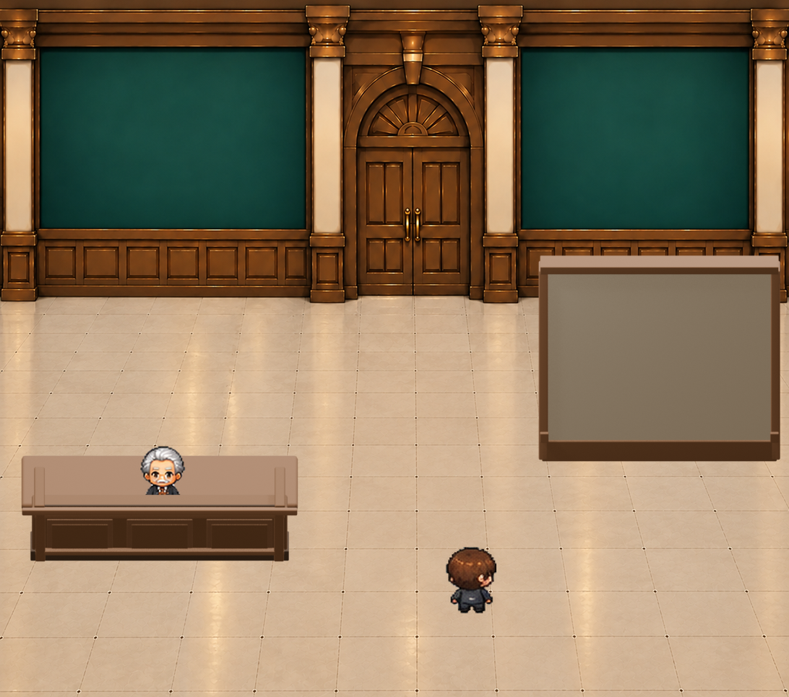

左カウンターと執事の位置、右仕切り壁の大きさ・角度、中央通路の広さ。木目や装飾、写真の位置はまだ確定していません。
正式ゲームと背景画像は変更していません。写真・額縁・台紙は壁の素材に焼き込んでいません。
2026-10-28 ・ 未承認のBlender制作候補 ・ iPhone監修用

左カウンターと執事の位置、右仕切り壁の大きさ・角度、中央通路の広さ。木目や装飾、写真の位置はまだ確定していません。
正式ゲームと背景画像は変更していません。写真・額縁・台紙は壁の素材に焼き込んでいません。